Flávio Bolsonaro
Hipotético
Um cavaleiro, um fuzil e um tiranossauro atravessam a ponte. Feka precisa correr, enfrentar o cerco e quebrar os nove lacres da sela.
Jogar o mega boss →Construção, regras e referênciasFantasia satírica em pixel art. O encontro também está no botão MEGA BOSS do menu principal.
O abrigo abre para uma segunda praça.
Mais espaço antes dos guardas, dezesseis civis e uma nova sequência de rajadas e destruição. Feka atravessa o pátio enquanto o cavaleiro avança para a galeria. O ataque seguinte espera o jogador chegar ao enquadramento.
Assistir à chegada ampliada ↓ · Jogar o encontro →Duas áreas, uma ameaça que continua avançando
17 segundos de partida pelos controles normais: final da ponte, dois espaços de chegada e entrada no combate. A câmera acompanha Feka. A faixa reproduz tiros, contatos, golpes e destroços; música e demais sons estão no jogo.
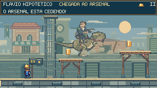
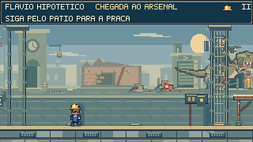
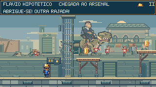
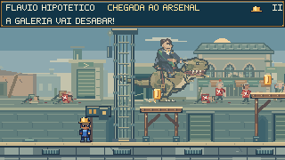
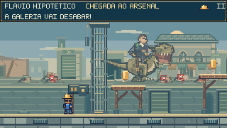
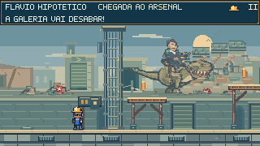
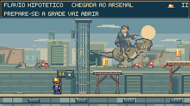
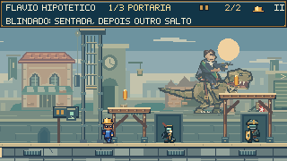
A sequência tem 11 segundos de ação, mais o tempo que Feka precisar para atravessar o pátio. Se o jogador ficar para trás, a segunda praça espera sua aproximação. Movimento e salto continuam livres; os dois portões usam a mesma colisão física do jogo.
Dezesseis civis na chegada, quatro saídas e dois ataques de destruição. Pausa congela a cena; movimento reduzido conserva as marcas assentadas. Ao reiniciar após a chegada, as grades já estão abertas e o cenário é reconstruído no estado do ponto de retomada. Registro dos dezesseis momentos · Áudio da chegada.
Do apoio das casas à linha da água
As construções antes terminavam sobre o canal. Agora elas se apoiam numa rua contínua, com sombra de contato, calçada e muro de contenção. As comparações mostram exatamente o mesmo instante da corrida.
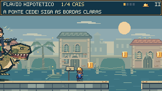
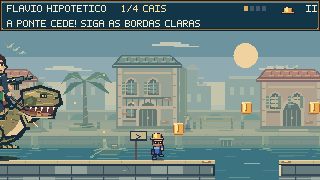
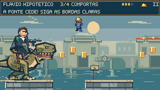
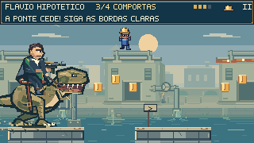
Cais, carga, comportas e portaria foram revistos no percurso real. Os remos entram na água durante a puxada e se levantam no retorno; o vento das palmeiras e dos toldos acompanha o tempo da cena.
Ruptura, contato e acomodação
Estudo isolado de 6 segundos, sem áudio, usando o desenho e os tempos do jogo. Madeira e guindaste, depois metal e comporta. Esta montagem não representa uma câmera jogável; a travessia completa está no vídeo abaixo.
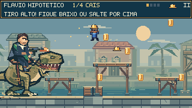
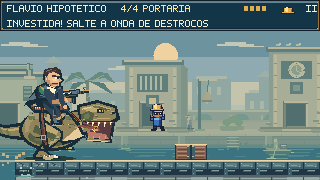
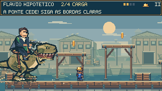
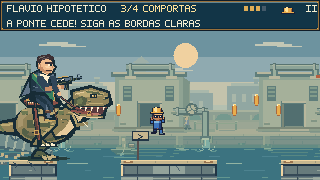
Na travessia gravada, os dez impactos das passarelas ficam visíveis. Sons de água e alvenaria acompanham os respectivos contatos, com volume abaixo dos disparos. Pausa e movimento reduzido continuam respeitados.
Uma margem viva, com quatro trechos
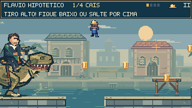
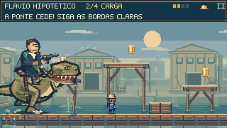
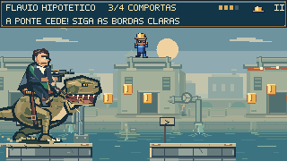
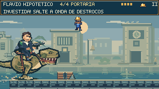
As ações usam o relógio do jogo: param na pausa e conservam o estado ao retomar nas comportas. O movimento reduzido suaviza tecido, sino, passos e água. A paleta distante e as bordas discretas mantêm os apoios e os projéteis em primeiro plano.
Construção, ruptura e consequência
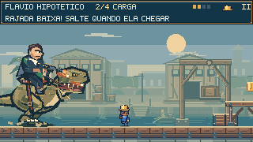
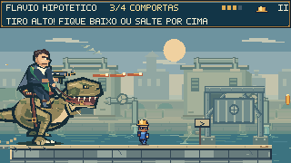
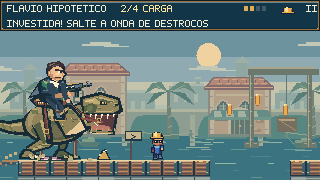
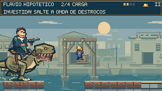
Na ruptura, os apoios falham em sequência, a viga gira e a carga se solta, quica e repousa. As passarelas que perdem o apoio também caem em peças. Fragmentos desaparecem sob a água, com ondulações começando no contato.
Os tiros produzem lascas na madeira e faíscas mais longas no metal. Quando atravessam um vão ou um trecho já desabado, atingem a água, com respingo e som mais suave.
As imagens vêm da partida pelos controles normais. Os contatos de bala com água e piso já destruído também têm regressões específicas de colisão. Movimento reduzido conserva os ataques, apoios e mudanças da ponte.
Correr, ler a ameaça, escolher o salto
21,3 segundos pelos controles normais, em velocidade real, sem mortes nem perda do capacete. O percurso passou de 1.600 para 4.480 pixels. A faixa da prévia contém o fuzil, impactos, desabamentos e contatos com a água; música e demais sons estão no jogo.
O primeiro trecho apresenta a corrida sob o tiro alto e uma alternativa pelas passarelas. Na área de carga, a rajada baixa pede um salto; a investida seguinte levanta uma onda de destroços. Depois das comportas, vãos próximos e rajadas em dois grupos exigem variar a duração e o momento dos saltos. As bordas claras e as moedas indicam os apoios.
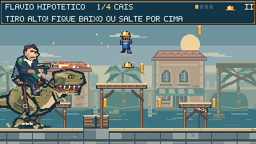
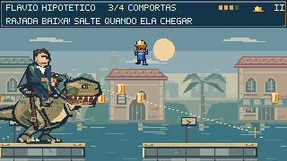
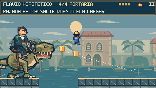
A destruição acompanha o avanço
Seis estruturas cedem na passagem do dinossauro. Vigas caem, cordas e cargas acompanham o movimento, e as bases ficam arruinadas. Atrás dele, o chão perde apoio de verdade: lajes, tábuas e chapas se desprendem e produzem respingos no canal. A câmera conserva essa borda visível.
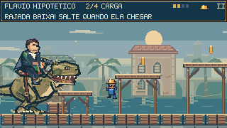
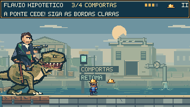
Ver os sete ataques e os momentos da travessia · Áudio sincronizado da perseguição · Jogar desde o início
Pressão em três fases
Três trechos da mesma partida por teclado, em velocidade normal: rua ao fundo, primeira fase e fase final. A faixa reproduz o fuzil, a recarga, os impactos e a destruição.
Observe a preparação da mira e saia da linha antes da rajada. A cobertura segura os projéteis; nas fases seguintes, ele avança durante a recarga e prepara um novo disparo. Na fase final, o fuzil também abre uma combinação com salto e perseguição.
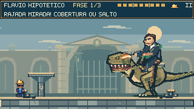
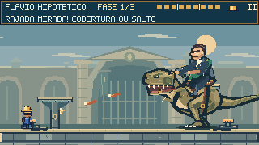
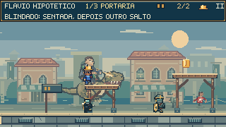
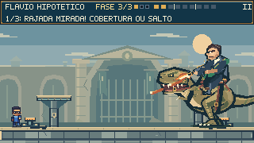
Partida por teclado com disparos e desabamentos sincronizados. Há uma morte no cais e outra no arsenal, com retomada no próprio trecho. A prévia usa os efeitos da arma e da destruição; música e demais sons estão no jogo. A partida completa está mais abaixo.
Corrida, abrigo e contato
A partida e a parada ganharam transições de velocidade. Os braços sobem aos poucos, o olhar vira em etapas e o lenço acompanha o corpo antes de se acomodar. Tiros próximos mantêm a reação em curso, sem reiniciar a pose a cada disparo.
Cinco segundos, sem áudio, com aproximação de 2× dos sprites. Cada painel acompanha o relógio real de um NPC; os personagens foram separados e reposicionados apenas nesta inspeção. O vídeo dos postos mostra o enquadramento normal da partida.
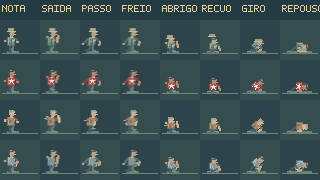
Registro da inspeção de animação · Ver os figurinos e as cenas no jogo
Silhuetas próprias, reações contínuas
Camisas vermelhas com estrela branca, casacos de trabalho, lenços e bolsas distinguem os personagens. Cabelo, tons de pele, costuras, bolsos, botas e acessórios foram redesenhados na grade de pixels do jogo.
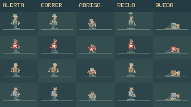
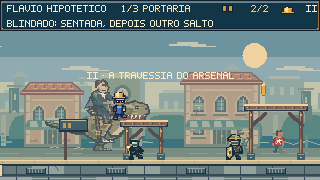
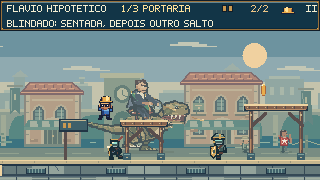
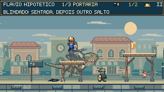
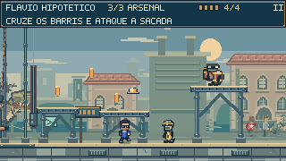
Ajustes de posição deixam os grupos mais visíveis entre as estruturas. Os tiros desta cena pertencem ao fundo; o perigo jogável continua nos guardas e nas pedras anunciadas no piso. Ver registro das ações e figurinos.
Preparação, contato e consequência
A destruição agora acompanha o golpe: há recuo antes de avançar, uma breve retenção no contato e acomodação do corpo depois. O fundo acompanha menos o movimento vertical da câmera, mantendo o cavaleiro visível durante os saltos altos de Feka.
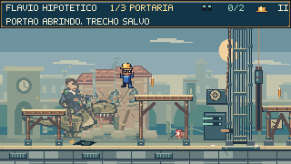
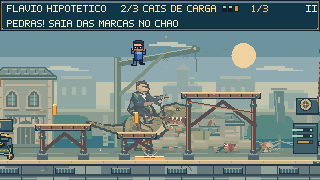
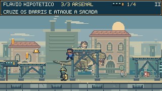
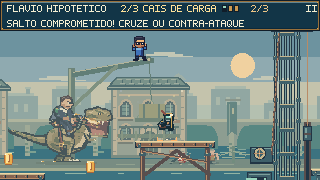
Uma população que reage
Cada grupo começa a se mover na aproximação da ameaça. Os NPCs têm velocidades, roupas, chapéus e bolsas distintos; os sobreviventes olham para trás durante a fuga. As quedas têm recuo, perda de apoio e acomodação, com corpos e acessórios permanecendo na rua.
Também foram refinados os reflexos do canal, barcos, chaminés e marcas de umidade. A poeira e os pássaros têm menor presença com movimento reduzido; o contato e a mudança do cenário permanecem legíveis. Ver os momentos capturados na partida.
Pressão com uma resposta legível
O batedor observa a permanência de Feka num apoio antes de preparar o salto. A marca âmbar fixa o destino por 0,7 segundo; sair dela não muda a mira. Ao pousar, ele se recupera por 1,05 segundo. Um salto por cima ainda derrota o guarda, inclusive durante o voo.
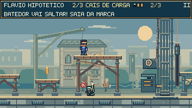
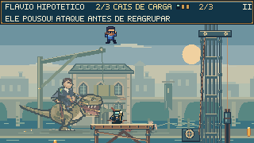
Os batedores mais ágeis têm bordas de cobre na capa, tiras diagonais e proteção nas botas. O aríete ganhou lascas e marcas de derrapagem ao colidir. Os impactos usam os sons do jogo; movimento reduzido preserva as indicações de perigo.
A vitória fica visível no cenário
Portaria, cais e arsenal têm duas, três e quatro travas. Os indicadores no posto e no HUD mostram quantos guardas restam; se a patrulha ficar fora da tela, a orientação informa de que lado ela está.

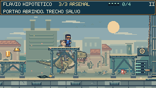
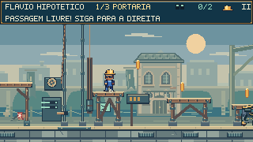
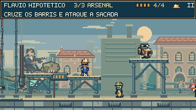
As duas alternativas foram percorridas com os controles normais, sem mortes durante as aproximações elevadas. A execução até a segunda inclui uma retomada anterior no cais. Ver os registros dos saltos e chegadas.
Três espaços, três problemas
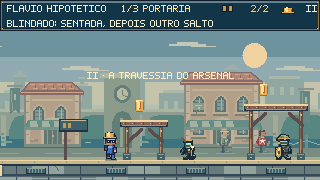
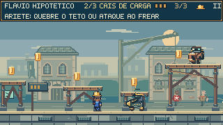
Defesas que mudam a abordagem
Blindado: o capacete fechado repele o salto comum. A sentada quebra a proteção e atordoa, exigindo outro acerto para finalizar. Também é possível quebrar o capacete durante a recuperação do escudo.
Aríete: frear expõe o condutor a um salto decisivo. Uma sentada durante a proteção quebra o teto; a carenagem permanece danificada e o condutor fica vulnerável.
Batedores: patrulham mais rápido e passam a combinar estocada e passo longo a partir do cais. A preparação mantém a direção, e cruzar por trás abre espaço para responder. Também disputam plataformas alcançáveis, com espaço de pouso livre de aliados e aviso próprio antes de saltar.
Lançadores: enxergam Feka no piso abaixo das sacadas. Os do arsenal combinam dois arcos, com preparação própria antes de cada lançamento. Aproximar-se pelo alto interrompe a pressão na origem.
Uma rua construída para o combate
Madeira com sapatas na portaria, tablados e cintas de carga no cais, vigas rebitadas no arsenal: cada trecho agora tem construção própria. Drenos embutidos, soleiras, encaixes e ferragens dão acabamento ao piso e aos apoios; as bordas claras continuam marcando as superfícies de salto. O dinossauro atravessa essa mesma rua ao fundo, deixando destruição em posições fixas.
Três atos, um confronto
- A ponte do impossível. Perseguição de quatro trechos sobre o canal, com oito vãos, passarelas, sete ataques e retomada nas comportas.
- A travessia do arsenal. Portaria, cais e arsenal: nove guardas, três portões e retomada por posto concluído.
- O último lacre. Nove acertos em três fases, com rajadas, investidas, mordidas, saltos, caudadas e cabos para contra-atacar.
Execução completa pelos controles normais, incluindo três mortes e retomadas. A faixa da prévia contém fuzil, recarga, impactos e desabamentos; música e demais sons estão no jogo.
Cavaleiro e dinossauro
Controles e retomada
← → ou A D mover · Shift correr · Espaço pular · ↓ no ar sentada · Esc pausa · R retomar o trecho.
As retomadas preservam o marco das comportas na perseguição, os postos concluídos e a fase do duelo. O encontro bônus mantém separado o progresso da campanha.
Conferido no jogo
192 testes passaram: 149 do encontro e 43 dos mecanismos compartilhados, além do build de produção. A perseguição completa conserva o capacete e não registra mortes; a partida dos três atos chega à vitória com três retomadas. Esta rodada confere os dois portões, a espera pela aproximação de Feka, a nova praça, as trajetórias das gotas e a persistência das marcas. A chegada e a partida completa foram regravadas pelos controles nativos; os três postos, as rotas altas, a pausa e os pontos de retomada continuam funcionando. Teclado, pausa, reinício e apresentação móvel foram conferidos no navegador.
Verificação no navegador e no celular · Partida completa · Travessia dos postos · Áudio da prévia · Regras e reprodução dos testes